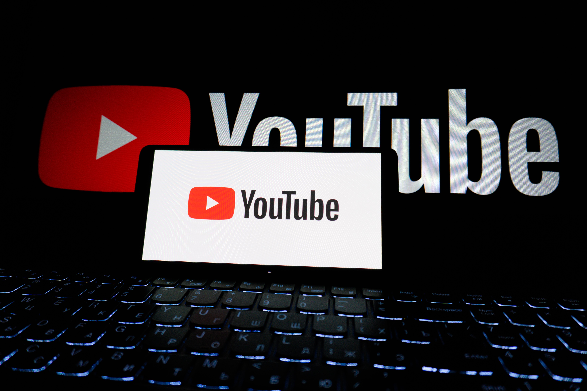

My Tech Blog

The 2am Classroom
The Ultimate Classroom Without Walls
Traditional education used to be bound strictly by physical textbooks and classroom walls. Now, whether you are a high school student tackling advanced calculus or a professional learning a new coding language,YouTube acts as an on demand instructional powerhouse.
Entertainment That Fits Every Mood
Whether I want to unwind with a deep-dive creator video or discover new favorites through YouTube Music, YouTube always hits the spot. It’s the ultimate digital escape because it feels less like a broadcast and more like hanging out with people who share your exact obsessions.
The Ultimate Rabbit Hole Awaits
Quick scrolls come and go, but true depth keeps us coming back. That’s why YouTube isn't just surviving the digital age it's defining it. Grab your snacks, pick your rabbit hole .
The Designer’s Secret Weapon: Canva